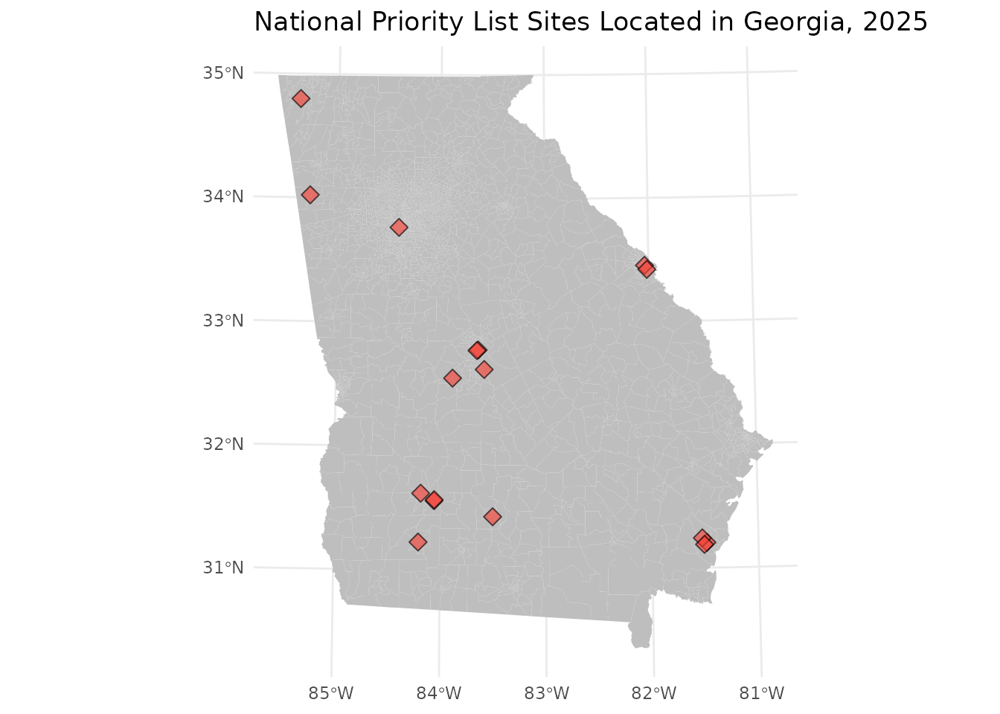
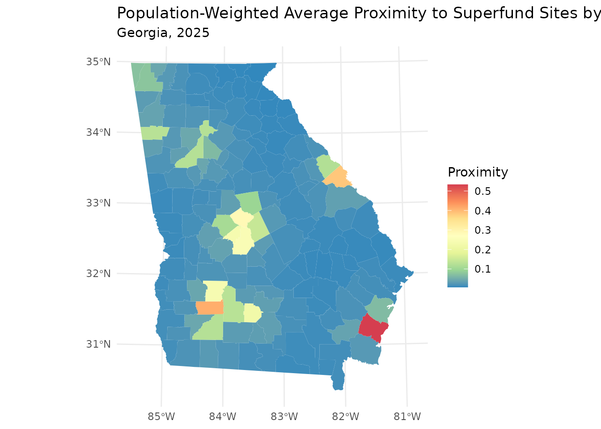
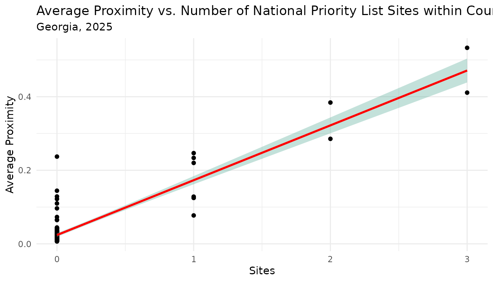

Vignette 2: Calculate Population-Weighted Average Proximity for Larger Areas
avg-proximity-by-county.RmdNote: this vignette builds on concepts introduced in the “Vignette 1: Calculate Cumulative Proximity for Geographic Areas” vignette. It may be helpful to familiarize yourself with the Vignette 1 before proceeding.
Introduction
In some cases, users may be interested in the average proximity to
environmental hazards for a larger administrative area, such as a county
or state. For example, a health agency may want to amplify messaging
about air quality in counties where people tend to live closer to
sources of air pollution or enhance emergency planning in counties where
people tend to live closer to factories that store toxic chemicals. The
avg_proximity function expands upon the
get_proximity function by allowing users to calculate
average and population-weighted average proximity values for larger
administrative areas.
In this vignette, we will find the population-weighted average proximity to environmental hazards for each county in Georgia.
Datasets
All functions in the hazprox are designed to work with
simple features (sf) objects. This example demonstrates a typical
workflow using two sf datasets bundled with the hazprox
package:
-
ga: 2020 census tract boundaries in the state of Georgia -
npls: National Priority List (NPL) locations, otherwise known as Superfund sites, within the state of Georgia
An NPL site is a contaminated area in the United States designated by the Environmental Protection Agency (EPA) for cleanup because it poses a risk to human health or the environment. National Priority List geospatial data were obtained from the EPA’s Envirofacts database.
The npls and ga datasets are LazyLoaded
with the hazprox package. When you call library(hazprox),
these datasets will be available to you even though they are not
displayed in the global environment. The data documentation contains
detailed information about these data, including field descriptions. Use
the help() function to read the data documentation:
help("npls").
Inspect and visualize data
The state of Georgia has 2791 census tracts and 17 NPL sites. Viewing
the first 5 records of the npls dataset reveals that these
data are simple feature POINTS projected in the NAD 1983 Georgia
Statewide Lambert coordinate reference system (CRS). The
npls data include the name of the site and the nearest
city.
npls |> select(NAME, CITY) |> slice(1:5)
#> Simple feature collection with 5 features and 2 fields
#> Geometry type: POINT
#> Dimension: XY
#> Bounding box: xmin: -275691 ymin: 11979720 xmax: 629786.7 ymax: 12906680
#> Projected CRS: NAD_1983_Georgia_Statewide_Lambert
#> NAME CITY
#> 1 HERCULES 009 LANDFILL BRUNSWICK
#> 2 WESTSIDE LEAD ATLANTA
#> 3 ALTERNATE ENERGY RESOURCES INC AUGUSTA
#> 4 T.H. AGRICULTURE & NUTRITION CO. (ALBANY PLANT) ALBANY
#> 5 BRUNSWICK WOOD PRESERVING BRUNSWICK
#> geometry
#> 1 POINT (629786.7 11979723)
#> 2 POINT (-275691 12906682)
#> 3 POINT (446138.1 12794977)
#> 4 POINT (-212180.3 12124442)
#> 5 POINT (616322.4 11993048)NPL sites are located throughout Georgia but appear to be clustered together in a few regions.
ga |>
ggplot() +
geom_sf(fill = 'gray', color = NA) +
geom_sf(data = npls, color = 'black', fill = '#F54439', shape = 23, size = 3, alpha = 0.65) +
ggtitle("National Priority List Sites Located in Georgia, 2025") +
theme_minimal()
The Georgia census tracts dataset is a simple feature MULTIPOLYGON
and shares the same projected CRS as npls. The
avg_proximity function requires that the input data have
the same projected CRS. The census tract data also includes a field for
population size, POP, which we will use to estimate the
population-weighted average proximity. However, the census tract data
does not contain a county grouping variable, so we will create one for
our calculations.
ga |> slice(1:5)
#> Simple feature collection with 5 features and 4 fields
#> Geometry type: MULTIPOLYGON
#> Dimension: XY
#> Bounding box: xmin: -210677.2 ymin: 11751900 xmax: 289688.3 ymax: 12254400
#> Projected CRS: NAD_1983_Georgia_Statewide_Lambert
#> STATE GEOID LSAD POP geometry
#> 1 GA 13101880100 CT 1358 MULTIPOLYGON (((139670.9 11...
#> 2 GA 13271950500 CT 2897 MULTIPOLYGON (((123993.4 12...
#> 3 GA 13185011100 CT 3643 MULTIPOLYGON (((61964.23 11...
#> 4 GA 13277960700 CT 4639 MULTIPOLYGON (((-26934.43 1...
#> 5 GA 13095001500 CT 1803 MULTIPOLYGON (((-210579.6 1...Calculate average proximity for counties
The avg_proximity() function accepts several inputs.
Required inputs:
- from: a POLYGON or MULTIPOLYGON sf object. Proximity is calculated as the sum of inverse distances between each polygon centroid and the features of interest.
- to: an sf object representing the features of interest. These features may be POLYGONS, LINESTRINGS, POINTS, or a combination of geometry types.
- group: a grouping variable that defines the level statistics are calculated for. All from polygons must be nested within a group.
Optional inputs:
- tolerance: the maximum search distance for features of interest. If provided, only features within the tolerance distance will be considered in proximity calculations. You can specify the units of tolerance using, units = ‘x’, where x is a common length measurement abbreviation (e.g., ‘mi’, ‘yd’, ‘m’, etc.).
-
weights: a numeric vector with the same length as
tothat indicates the weight to be applied to each feature. -
pop_weights: a numeric vector representing the
population living in each from polygon. If provided, a
population-weighted average will be returned. Omitting
pop_weightswill return a simple average.
To prepare our data for analysis, we will calculate a new field, County, to group tracts into counties. Counties can be identified from the first five characters of the GEOID field.
ga$County <- substr(ga$GEOID, 1, 5)For this example, we will consider all NPL sites within 20 miles of each census tract centroid. We will also request that the function return a population-weighted average for each county. Results are returned in a new sf object aggregated to the group level. Average proximity is stored in a column, “avg_prox”.
gacnty <- avg_proximity(from = ga,
to = npls,
tolerance = 20,
units = "mi",
group = "County",
pop_weights = ga$POP)Map results
gacnty |>
ggplot() +
geom_sf(aes(fill = avg_prox), color = NA) +
scale_fill_distiller(palette = "Spectral", name = "Proximity") +
labs(title = "Population-Weighted Average Proximity to Superfund Sites by County",
subtitle = "Georgia, 2025") +
theme_minimal()
The choropleth map above highlights counties where the population tends to live in closer proximity to NPL sites throughout Georgia. Similar to the point-level map, this map shows apparent clustering in a few regions of the state, with the highest average proximity in Glynn County in the southeast.
Comparison of average proximity and number of features within boundary
Importantly, average proximity will not always correlate with the
number of features located within an area. If we look at a scatterplot
of county average proximity scores and the number of NPL sites within
the county, we see a positive trend between these two values. However,
there is considerable variability in average proximity scores among
counties with the same number of NPL sites. This variability is the
result of avg_proximity() taking into account the location
of all NPL sites, not just those that fall within the county boundary,
and how close the population lives to each NPL site.
sites_per_county <- ga |>
mutate(Sites = lengths(st_intersects(ga, npls))) |>
st_drop_geometry() |>
group_by(County) |>
summarise(Sites = sum(Sites))
gacnty |>
left_join(sites_per_county, by = 'County') |>
ggplot(aes(x = Sites, y = avg_prox)) +
geom_point() +
geom_smooth(method = "lm", color="red", fill="#69b3a2", se=TRUE) +
ggtitle("Average Proximity vs. Number of National Priority List Sites within County",
subtitle = "Georgia, 2025") +
ylab("Average Proximity") +
theme_minimal()
#> `geom_smooth()` using formula = 'y ~ x'